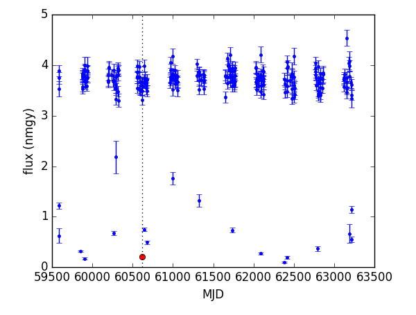

The CI group members of Twinkles are now turning their attention to our sister project, DC1 PhoSim Deep, but they are continuing to learn about running the LSST sims and DM stack at scale: both checkpointing and multithreading in PhoSim are close to being realized, and the Twinkles DM Level 2 pipeline seems to be holding up on the larger sky areas involved. While the CI group figure out when the Twinkles 1 main data generation run (“Run 3”) could be executed, the SN and SL science teams will be thinking about the inputs to this final simulation, and the light curve tests they want to do with the outputs. A lot of progress on this analysis is planned for the CMU Hack Week in November, so we have work to do to get data before then!
How does our sister DC1 project relate to Twinkles 1, and what are its implications so far?
DM L2: Jim is working towards running the Twinkles DM Level 2 pipeline on a full focal plane. So far he has 5 visits for just a single raft, but since the pipeline works on sky “patches” this should be sufficient for testing the image combination. (A patch is somewhat larger than a sensor.) When one runs makeDiscreteSkyMap.py to determine the astrometric system for the coadds, that code makes ‘patches’ for actually doing the work. After generalizing the Twinkles version of the Level 2 analysis to iterate over patches and sensors (Twinkles only has one of each), the revised pipeline seems to work fine.
Tom is generating full focal plane visit image sets with PhoSim. He has set up a couple of new workflows to handle this task:
The first one simulates a single raft, and has successfully run for 5 instances that Jim provided.
The second workflow does a full focal plane. This has uncovered two issues:
Execution time - in Twinkles 1 Run 1 we found that 10% of the visits or so would not fully run within the constraints of the batch queues at SLAC and certainly not at the shorter batch queues at NERSC, so we started a two-pronged approach: check-pointing, and multi-threading. John Peterson is working on the latter at NERSC, and it looks promising! Tom has asked to be a beta-tester, but has received no response yet. Meanwhile there are two types of check-pointing built into PhoSim. One relies on Condor batch system, which we do not have available to us. The other other is internal, and Tom has been investigating it, revealing a problem in PhoSim that John’s team have now patched. There remains a problem with the construction of one data product which is not yet addressed: mechanically it seems to be working but not all the data products are good at this point. Tom is optimistic about getting the checkpointing to work, at least without multithreading (John thinks having both internal checkpointing and multithreading might be impossible).
The other issue with running the focal plane is that the workflow system relies heavily on e-mail messages as its internal (usually very reliable) communication mechanism. The existing implementation turns out not scale well to 189 sensors, as some of the bookkeeping data got larger and an e-mail limitation threshold was exceeded (lines cannot be longer than 991 characters in some batch hosts’ e-mail systems). Tony and Brian are thinking about solution and Tom is working on a workaround.
Despite these problems Tom has managed to run PhoSim on the full focal plane: 42 out of 189 single sensor jobs timed out (reinforcing the need for checkpointing or multi-threading).
Seth thinks the distribution of bright stars across the FP could be the cause of the range of CPU times (the sky brightness should not vary too much across the field). We are not yet sure what ‘bright’ means in terms of influencing CPU time, but Tom will look into it.
Phil pointed out that the magnitude of the brightest star in the image, and perhaps the number of stars brighter than some threshold might be good CPU time estimators (or features for the machine learning predictor).
This progress is relevant to our own large-scale Twinkles runs: we have done Run 1, 1.1, and 2, and now need to get ready for Run 3, simulating all 12k Deep Drilling Field visits. This will stress the simulation and image processing system in another dimension, and give much better light curves, particularly for the faint SNe that Rahul and others care about. The DDF cadence at the moment is not optimal, but should at least enable faint SNe to be studied through the combination of the fluxes in the many visits in a given night. (The Monitor needs to be able to do this combination - now issued here). So, while the night-to-night cadence may not be good, the final sensitivity should be.
The following activities need putting on our calendars:
Twinkles 1 Data Generation: Run 3
DESC Hack Week Twinkles sprints
We discussed the work needing to be done before the Run 3 a) PhoSim run and b) the DM Level 2 processing run (which might depend on our difference imaging capability).
Do we need image differencing? We discussed the light curves that would be needed: Rahul pointed out that the Forced Photometry on CoaddSources is close to what people already do, and so leaving difference imaging to the Hack Week itself might be OK. In the meantime, what we need is Monitor capability to subtract off a static component (due to the galaxy, for example). We issued this here.
We would also (potentially) like the ability to do Forced Photometry at the *true* positions. This latter option would be emulating the performance of a perfect deblender, and so could be an interesting yardstick. Michael has asked DM about this on community.lsst.org, and we will follow the discussion, by issuing Michael with reporting to us. For now, see Michael’s inquiry at CLO.
For the Phosim Run 3, we need to make it work on all visits rather than the 1k we selected (so need more instance catalogs) and we need to do some work to finish the catalog inputs - including dialing down the SNe abundance, to maybe 1 SNe per host per season. We need to get as many cosmological targets as we can for the light curve analysis (to get good statistics), maybe using all of the galaxies that are there… Discussion will continue during the writing of the Twinkles design Note.
Rahul’s basic goal for Twinkles 1 is to be able to say whether we can match catalog production estimates, since Twinkles is a real image analysis - then he can confidently work at the catalog level at larger scale. The SL goal is somewhat similar, although the blending problem is more severe for us, so its interesting to see how the difference imaging helps with this.
In terms of the CI group’s wider program, their ability to support Twinkles is winding down and so on the science side we have to be sensitive to that. We need to think about the support needed, and when, for the big runs. Has this been discussed offline?
Jim says that the CI group has thought about it, but we need Tony in on an informed discussion. The NERSC Cori upgrade is also happening in September, so we will need to dovetail with that as well as the DC1 Phosim Deep effort that Chris Walter has a schedule for. There is probably a window to do the Twinkles Run 3 stuff before we get deep into PhoSim Deep production (assuming we have the instance catalogs in hand for the ~12k visits).
We decided to ask the CI group in an issue when their availability would be, so that the science team can prepare its inputs before then. The idea would be for the CI group will give a deadline to Twinkles science team to have instance catalogs ready, and advise on the schedule for the Run 3 PhoSim and DM runs.
We seem to have converged on a plan for hack week, with the infrastructure team attending the hack week all week, but the science team focusing on last two-three days and then staying on at Michael’s invitation for Monday and Tuesday. Phil will work with the group to figure out the Task Force travel funding, and we left it up to individuals when they would attend. Hooray Pittsburgh! :-)
The ANTARES (NOAO) Event Broker team are interested in using Twinkles 2 as an Alert generator - especially if we add in some non-SNIa transients (which we’d want to do anyway to test our classification pipeline). Darko Jevremovic (Belgrade, SERVO) is keen to help turn our DIASources (once they are made!) into Alerts using AlertSim, even starting from Twinkles 1 (DIASources are hot property, apparently).
Simon, Michael and Phil sat down to discuss the technical issues facing the DM processing pipeline: image differencing and object aggregation. Either could be solved by anyone looking to become a DM stack astronomy superuser, in Simon’s opinion. What we need to is figure out which of us would like to get into the DM stack to this depth: they are projects that would lead to the worker becoming an expert LSST DM stack astronomer.
In #284 Phil suggested we write 11(!) “LSST DESC Notes” on our Twinkles work so far. (The proposed Publication Policy refers to “research notes”, and Chris Walter needs something to cite in his DC1 PhoSim Deep requirements document.) We revisited this bold plan. Here’s the folder of planned notes: we decided that Jim and Bryce would indeed move their note subfolders to the Pserv and Monitor repos respectively. Bryce and Scott plan to write jupyter notebooks, while Phil is thinking about latex for the Design Note - partly because it will include citations to papers, but also because the Notes system ought to support latex. Rahul requested that we use that design Note to plan the science analysis, including defining the questions we want to answer using the Twinkles 1 data. Follow the discussion via the epic issue here.
In order to use the same pserv database instance for different projects (e.g., Twinkles Run1.1, Twinkles Run2, PhoSim Deep), Jim is proposing to add a “project” column to all of the Level 2 tables. Here is the pserv pull-request. Once we have more than one project in the tables, this will require some changes to the Monitor code. No-one raised any objections, and the SNMonitor developers are ready to cope with the change (although the coping work needs to be issued).
We have a number of objects that have light curves that look like this:

The PhoSim centroid files don’t show any variability like this on the input side for these objects, so I dove into the forced source catalogs for the visit indicated by the red dot and for the visit just preceding it. Here is what I found:
visit PsfFlux (dn, calib) Ap_3_0 (dn, calib) Ap_4_5 (dn, calib)
703312 3651.2683 1.30e-05 3048.4722 1.09e-05 3392.5642 1.21e-05
704236 227.4048 7.63e-07 2629.8508 8.83e-06 3296.7612 1.11e-05
These are the “base_PsfFlux_flux” (which we are using in the Level 2 tables), and the aperture fluxes for 3 and 4.5 pixels (“base_CircularAperture_n_m_flux” in the forced_src schema) in units of DN and calibrated fluxes. Should we be using a different flux in the Level 2 tables? Are these dropouts a problem that DM needs to address?
Phil and Rahul suggested looking at the model PSF size, shape and centroid position (if that is available) as well as the filter and airmass, suspecting that this could be differential chromatic refraction (DCR) at play - the dropouts are mainly seen in the u-band, you see. Jim started an issue on this, you can follow it here.